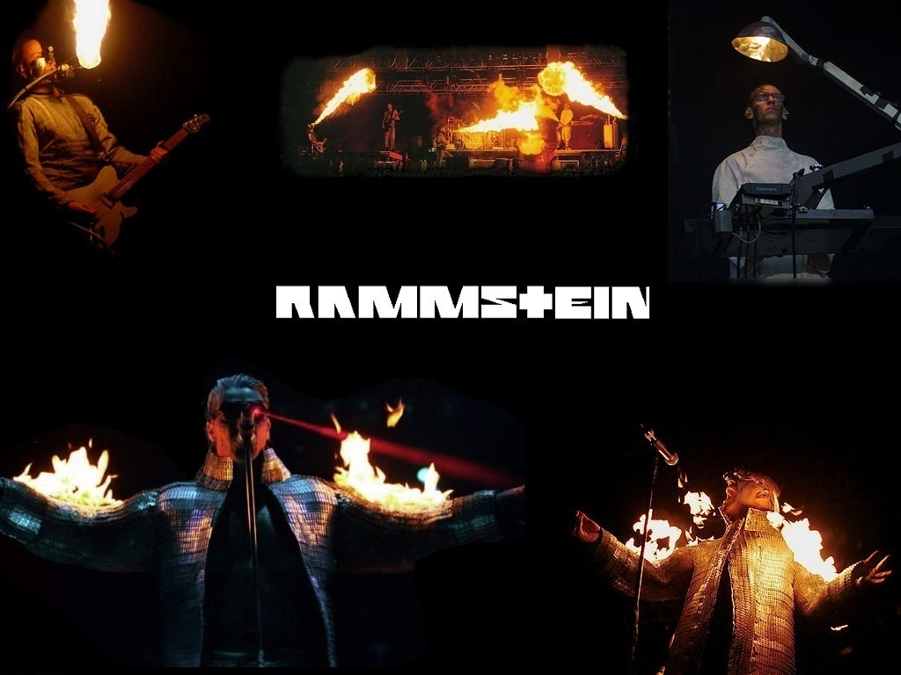

Особенности творчества Rammstein
Коллектив Rammstein на данный момент известен по всему миру. Он имеет множество отличительных особенностей, черт, характерных признаков. Эпотажность, дерзость, эксцентричность принесли группе славу, которую мы лицезреем в настоящее время. Информация ниже застрагивает особенности музыки и текстов, а так же тему критики коллектива.
Название группы
{kind=link}
28 августа 1988 года на авиабазе Рамштайн во время авиашоу с участием итальянской авиационной группы высшего пилотажа Frecce Tricolori произошло столкновение трёх самолётов, в результате которого погибли 80 человек и больше трёхсот получили ранения (об этой трагедии на авиабазе рассказывает одноимённая песня «Rammstein» из дебютного альбома группы Herzeleid). Согласно одной из версий, музыкантам Rammstein не было известно об этой трагедии, когда они придумали название группы.
Придумано оно было Кристофом Шнайдером, Паулем Ландерсом и Кристианом Лоренцем.
Став популярной, группа долгое время дистанцировалась от взаимосвязи между их названием и названием места трагедии. Двойное «м» в названии позволяло объяснять слово как обозначение каменного тарана, но этот вариант был озвучен уже намного позже.
Музыка
Стиль музыки Rammstein, который сами музыканты в шутку окрестили «танц-метал» (нем. Tanzmetall), преимущественно представляет собой индастриал-метал в духе новой немецкой тяжести. Однако он смешивает элементы как и электронного индастриала, так и альтернативного метала, и других жанров. Многие композиции выдержаны в одном ритме (за что Rammstein и назвали свой стиль «танц-метал»), встречаются и более сложные композиции. Музыканты отрицают непосредственное влияние группы Kraftwerk: «Нам они никогда не нравились». Творчество группы также относят к таким стилям рок-музыки, как хард-рок, готик-метал, ню-метал, симфоник-метал, прогрессивный метал и альтернативный метал.
Тексты
Автором всех текстов, за исключением кавер-версий на произведения других исполнителей, является Тилль Линдеманн.
Тексты можно разделить на альбомные и внеальбомные. Так как у каждого альбома имеется своя тема и концепция, то и тексты входящих в него песен должны соответствовать им. К примеру, второй альбом группы Sehnsucht посвящён странным и извращённым желаниям. Показателен в этом отношении и альбом «Liebe ist für alle da» («Любовь для всех»), посвящённый любви. Бонусом к нему вышли 5 треков, которые не попали в альбом потому, что их тексты не связаны с его темой.
Нецензурную лексику Тилль использует крайне редко. Основной провокационный эффект складывается за счёт темы, смысловой нагрузки текста, которые балансируют на грани морали и/или эстетики, хотя иногда без особых проблем перешагивают и их. Тематика текстов — темные стороны жизни. Литературный герой текстов — как правило, в чём-то ущербный с традиционной точки зрения человек — маньяк, извращенец или просто одержимый чем-либо персонаж с нестандартным взглядом на вещи. Многие тексты характеризуются анатомичностью и разной степенью садомазохизма.
Критика
Уже в начале существования группы со стороны СМИ некоторых стран, и в первую очередь немецких, в адрес музыкантов часто высказывались обвинения в праворадикальных тенденциях. Причиной для этого послужили шоу Rammstein, выдержанные в стиле Третьего рейха, тексты песен, смысл которых можно истолковать двояко, преобладающая тематика насилия и брутальности. Критика усилилась после того, как в 1998 году был снят видеоклип на сингл «Stripped» с использованием фрагментов документальных фильмов Лени Рифеншталь «Олимпия» (фильм о XI Летних Олимпийских играх 1936 года в Берлине). Несмотря на то что некоторые фрагменты из клипа были удалены, обвинения в адрес группы о распространении «фашистоидных» взглядов и идеализации «национал-социалистической» эстетики продолжались. На телевидении было запрещено показывать этот клип раньше 22 часов вечера. Позже Линдеманн признался, что это было провокацией, они перешагнули границу, и такого больше не повторится.
Под огонь критики и обвинений в «солидарности с национал-социализмом» группа попала в 1999 году после расстрела в школе «Колумбайн». Как выяснилось в ходе расследования, Эрик Харрис и Дилан Клиболд были фанатами Rammstein.
Информация о том, что террористы в Беслане слушали какую-либо музыку, не находит подтверждения в показаниях заложников. Какие-либо упоминания на эту тему также отсутствуют в отчётах Федеральной и Североосетинской парламентских комиссий по расследованию обстоятельств бесланского теракта.
Информация взята с сайта Википедия: https://ru.wikipedia.org/wiki/Rammstein